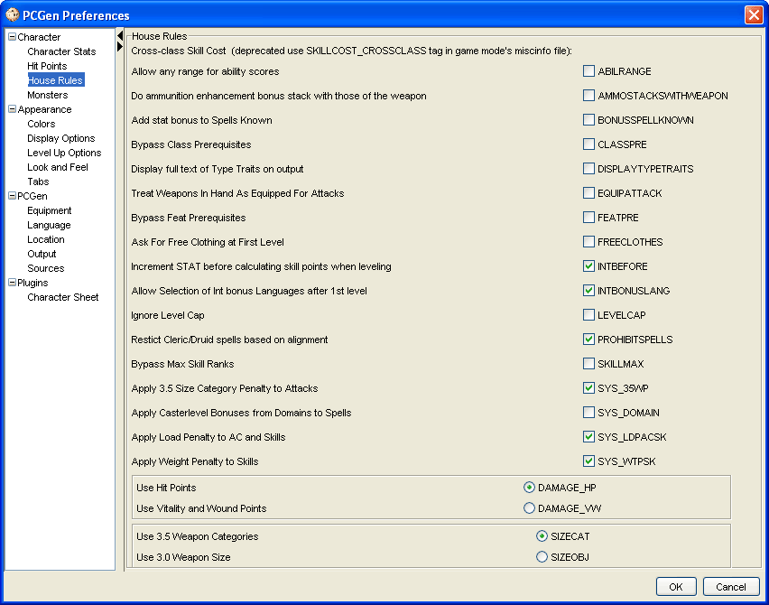

The House Rules option allows certain house rules to be applied. These are customizable rules that are not the default guidelines established by the Players Rules. The checkmark by each option signifies that it is selected to be used for PC creation. House Rules are saved separately for each gameMode and each gamemode may have it's own specific set of house rules. The rules pictured above are from the 3.5 gameMode.
The Cross-class Skill Cost rule has been deprecated.
The Allow any range for ability scores allows for ability scores below 8 and above 18, specifically using the optional Point Buy system. Unchecked one cannot create a point buy method outside the ranges of 8 and 18. Please note that you must check this box, close the preferences and open them back up again before you can create a point buy method of any range.
Do ammunition enhancement bonus stack with those of the weapon determine if a ranged weapon and it's ammunition stack their enhancement bonuses when the ammo is loaded in the weapon. In 3.0 rules the default is yes (checked), in 3.5 rules the default is no (unchecked).
The Add stat bonus to spells known adds to a characters number of spells known using the Table:Ability Modifiers and Bonus Spells. Normally characters with a limited number of spells known such as Bards and Sorcerers do not get bonus spells known due to high ability scores.
The Bypass Class Prerequisites allows the user to ignore the prerequisites for a class and allows them to qualify for any class available regardless of what the material allows.
The Treat Weapons In Hand As Equipped For Attacks option allows all weapons that are merely listed as 'equipped' but no in hand in the inventory of the character to be calculated as if the item were equipped in hand.
The Bypass Feat Prerequisites allows the user to ignore the prerequisites for a feat. If you wish to utilize this option it is recommended that you turn it back off once you have made your feat selections. Having this option enabled will cause problems when leveling up many classes due to the prerequisites being bypassed in hidden feats used by the class.
The Ask For Free Clothing at First Level presents the user with a pop-up when first creating the PC asking the user to select a free set of clothing for the PC to wear. Deselecting this option will prevent the pop-up from appearing. This feature is hardcoded to use the equipment type "Starting" which has been added to qualifying clothing.
The Increment STAT before calculating skills points before leveling allows the user to decide if skill points are determined before or after a character gets their increase in stat (in regards to Intelligence modifying skill points earned)
The Allow Selection of Int bonus Languages after 1st level allows a character to choose additional bonus languages past first level if the characters INT score increases.
The Ignore Level Cap will allow the user to exceed the maximum level as defined in the data class files.
The Bypass Maximum Skill Rank allows the user to ignore the maximum level for their skills (3+level) and take as many points in any skill as they wish.
Apply 3.5 Size Category Penalty to Attacks . Unchecking this will cause the size penalty to attacks to be ignored.
Apply Casterlevel Bonuses from Domains to Spells . Some Domains grant Casterlevel bonuses to spells of Certain Schools, Subschools or Descriptors as detailed in the Domains description. These bonuses are not active by default because of a limitation within PCGen. Domains are class abilities and the casterlevel bonuses should only apply to spells granted from the same class granting the Domain. PCGen cannot limit this and will apply a bonus to any qualifying spell regardless of what class it comes from. For example if you create a Cleric/Wizard with the Knowledge Domain it would grant a +1 Casterlevel bonus to all Divination spells Cleric and Wizard alike. We have provided a way to activate these bonuses, Under Settings -> Preferences -> House Rules you will find the rule "Apply Casterlevel Bonuses from Domains to Spells". Checking this box will activate these bonuses. Note that if your character does not have spells from other classes you will not be breaking any rules.
The Apply Load Penalty to AC and Skills sets the appropriate penalties when a PC's carried equipment changes from normal to light, medium, or heavy load. This option affects all the penalties going along with having the appropriate load as determined in the Players Rules. Not selecting this option will allow the PC to have no adverse affects when equipping a heavier load than allowed.
The Apply Weight Penalty to Skills is similar to the Apply load penalty to AC and skills option but only applies the weight penalty to skills and not AC. Deselecting this penalty will remove all penalties with weight to affect the appropriate skills as determined in the Players Rules.
The Use Hit Point/Use Vitality and Wound Points allows the use of the alternate Vitality and Wound Point system detailed in Unearthed Arcana.
The 3.5 revision of the rules significantly changed the way weapon sizes were handled within the game. The Use 3.5 Weapon Categories / Use 3.0 Weapon Sizes choice allows the user to choose which version of the Weapons size rules to use within PCGen.